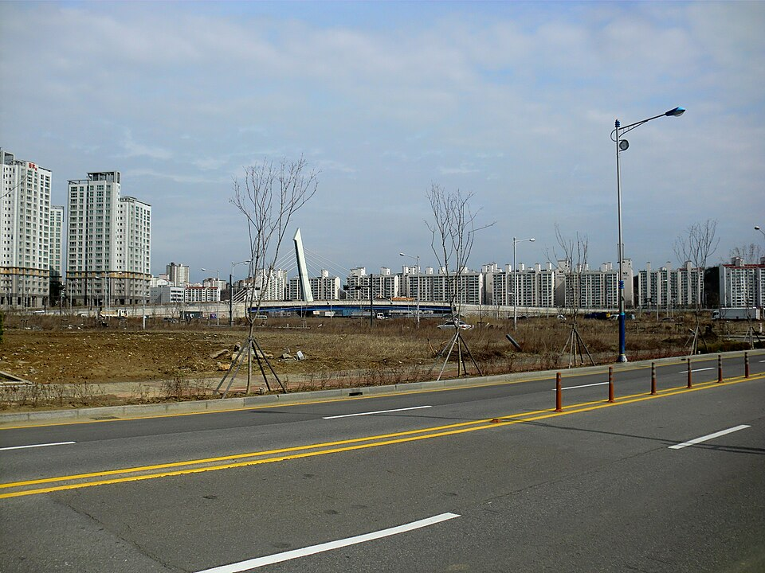

지역·대상별
김포 검정고시 — 40·50대에 다시 시작하는 만학도 과외

“이 나이에 공부를 다시 할 수 있을까요?” 김포 검정고시 과외 상담에서 40·50대 어머님·아버님들이 가장 많이 하시는 말씀이에요. 그때마다 저희는 이렇게 답합니다. “늦은 게 아니라, 지금이 딱 좋은 때입니다.” 젊을 때 놓쳤던 공부를 다시 꺼낸 만학도분들이 김포에서 매년 합격하고 계세요.
늦게 시작해도 괜찮은 이유
- 나이 제한이 없어요 — 검정고시는 60·70대도 응시합니다. 오히려 인생 경험이 사회·국어 지문 이해에 도움이 돼요.
- 만점이 아니라 평균 60점 — 전 과목 평균 60점이면 합격. 목표가 분명해 부담이 적습니다.
- 한 번에 다 안 돼도 OK — 과목 합격제로, 60점 넘긴 과목은 다음 회차에 면제돼요. 한 과목씩 쌓아가도 됩니다.
오래 쉬었어도 따라올 수 있게
학교를 떠난 지 20~30년이 지났어도 걱정 마세요. 저희는 “기억나는 게 하나도 없다”는 상태를 기준으로 시작합니다.
- 기초부터 천천히 — 분수 계산, 알파벳처럼 정말 기초부터. 아는 척 넘어가지 않아요.
- 반복 복습 중심 — 나이가 들면 한 번에 안 외워지는 게 당연해요. 여러 번 돌아오는 설계로.
- 내 속도로 — 진도를 재촉하지 않습니다. 이해될 때까지 같은 걸 다시 봐도 괜찮아요.
합격, 그다음은?
검정고시 합격은 그 자체로 큰 성취지만, 여기서 멈추지 않아도 돼요. 고졸 학력으로 자격증 준비, 대학·평생교육원 진학, 재취업까지 이어집니다. “자녀에게 부끄럽지 않은 졸업장을 갖고 싶었다”는 분도, “못다 한 공부의 한을 풀었다”는 분도 계세요. 이유가 무엇이든 충분합니다.
김포에서 이렇게 함께합니다
‘김포 근처 검정고시 학원’이나 ‘검정고시 인강’을 알아보셨더라도, 저희는 학원·인강이 아닌 1:1 맞춤 과외예요. 젊은 학생들 사이에서 눈치 볼 일 없이, 김포 어디든 방문·화상(줌) 수업으로 편하게. 살림·일과 병행할 수 있게 시간표도 맞춰 드립니다.
김포에서 다시 시작하는 공부, 더나은에듀가 끝까지 함께할게요. “이 나이에 될까” 고민부터 편하게 상담하세요. 무료입니다.